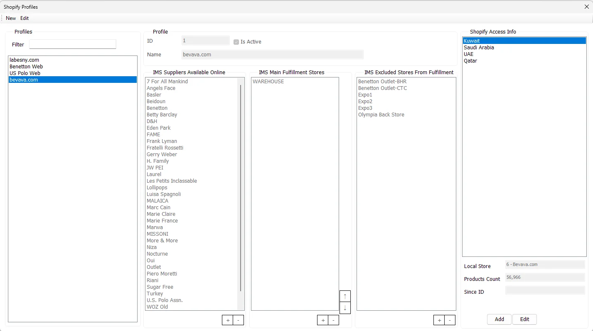
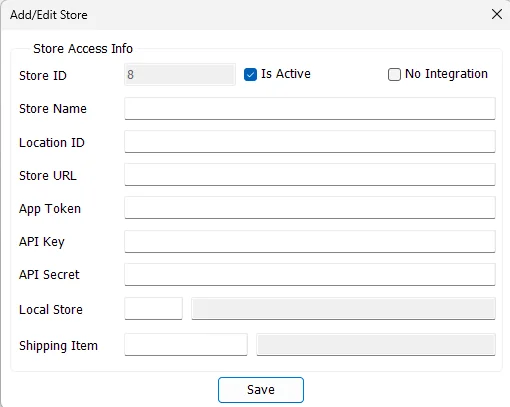

Manage Profiles
Manage Profiles defines how an online channel is represented inside IMS: which suppliers may be sold, where fulfillment should be sourced first, which Stores must not be used, and how each Shopify Store/market maps to an IMS online Store.

Profile
| Field | Meaning |
|---|---|
| ID | IMS identifier for the Shopify profile. |
| Name | Business name of the online profile/channel, for example a website or brand storefront. |
| Is Active | Controls whether the profile is active for the integration workflow. |
| Filter | Filters the Profiles list by Profile Name. |
Saving a profile requires a Profile Name and at least one supplier in IMS Suppliers Available Online.
IMS Suppliers Available Online
This list is the merchandise boundary for the profile. Add the IMS suppliers/brands whose items are eligible for the online channel and remove suppliers that should not participate.
IMS Main Fulfillment Stores
Main Fulfillment Stores are the preferred physical locations from which IMS should source stock for online orders. Their order matters: use the ↑ and ↓ controls to set fulfillment priority.
During automatic fulfillment IMS checks these priority Stores first. If the required stock is not available there, it can continue to other eligible Stores according to their online fulfillment priority.
IMS Excluded Stores From Fulfillment
Excluded Stores are locations that must not be used as stock sources for this profile. A Store cannot be present in both Main Fulfillment Stores and Excluded Stores; IMS prevents that overlap while the profile is edited.
Shopify Access Info
A single profile can contain multiple access records—for example separate Shopify Stores/markets/countries under the same commercial profile. Selecting one shows its mapped Local Store together with the integration's Products Count and Since ID status values.
Use Add to register another access record and Edit to change the selected one.

Add/Edit Store Access
| Field | Purpose |
|---|---|
| Store ID | IMS identifier of the Shopify Access record. |
| Is Active | Enables/disables this Store access record. |
| No Integration | Marks a Store/channel that will be handled manually in Incoming Orders instead of using Shopify API access. |
| Store Name | Display name used throughout Incoming Orders and profile selection. |
| Location ID | Shopify location identifier used by the integrated Store. |
| Store URL | Shopify Store domain/URL used for API access. |
| App Token / API Key / API Secret | Shopify credentials. IMS stores the credential values encrypted. |
| Local Store | The IMS online Store to which this Shopify Store is mapped. The selected IMS location must be configured as an online Store. |
| Shipping Item | IMS Service Item used to represent shipping/delivery value on online orders. |
Integrated Store
For a normal integrated Store, the Store Name, Shopify connection information, Local Store and Shipping Item are mandatory. IMS also prevents duplicate Store names and duplicate integration identifiers/credentials across access records.
No Integration Store
When No Integration is selected, Shopify URL/API credentials are not required. Store Name, Local Store and Shipping Item remain required. Incoming Orders then exposes manual New Order entry so an offline or non-API sales channel can still use the same IMS order, fulfillment and invoicing workflow.
How the Integration Server uses Store Access
The background Shopify Integration Server loads the active Store Access records under its configured Profile ID. The values maintained here directly control the background integration:
| Store Access value | Used by the server for |
|---|---|
| Store URL + App Token | Connecting to the Shopify Store for orders, products, variants and inventory. |
| Location ID | The Shopify inventory location that receives the calculated IMS quantity. |
| Local Store | The IMS online Store that owns imported orders and receives fulfillment transfers. |
| Shipping Item | The IMS Service Item used when an imported Shopify order contains a shipping charge. |
| Products Count | Refreshed by the server from Shopify and stored back on the Store Access record for monitoring. |
Recommended setup order
- Create/activate the profile and choose the suppliers allowed online.
- Add the preferred Main Fulfillment Stores and arrange their priority.
- Add any Stores that must be excluded from fulfillment.
- Add each Shopify Access Store/market and map it to the correct IMS online Store.
- Assign the Shipping Item used by that online Store.
- Save the configuration, then verify Incoming Orders for that Profile and Store.